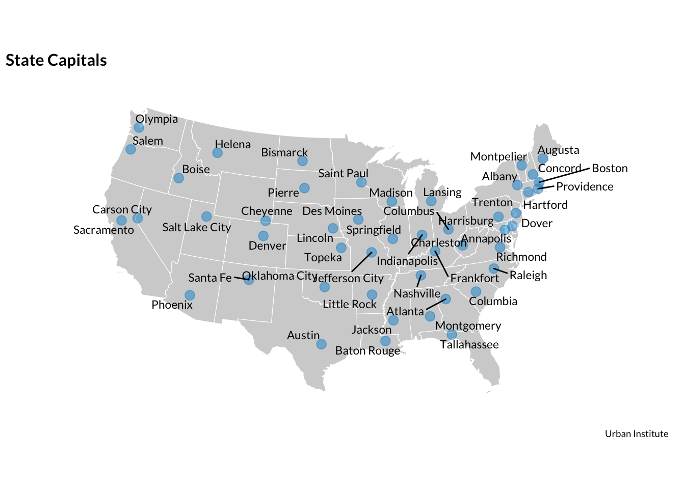

Introduction
Geospatial analysis is the ingestion, manipulation, display, and modeling of geographic and spatial data. The data can be represented explicitly as coordinates (latitude & longitude) or implicitly as addresses, Census tracts, or other identifiers.
This guide outlines the many tools in R for geospatial analysis and mapping. New tools are always being developed, so this guide will be occasionally updated as better methods emerge.
R can have a steeper learning curve than point-and-click tools for geospatial analysis like ArcGIS. The extra effort is worth the reward.
- Geospatial analysis in R scales better than pointing-and-clicking. Clear scripts can easily scale across time, across geography, and across analyses.
- Point-and-click tools are not reproducible. The audience, other researchers, and the analyst/mapper 6 months after the analysis is completed will have little idea what happened in a stream of undocumented right- and left-clicks. R is a scripting language that if used properly, creates a reproducible script that can be read and rerun many years later.
- Most point-and-click tools for geospatial analysis are proprietary and expensive. R is free opensource software. The software and most of its packages can be used for free by anyone for almost anything.
I hope this guide is a useful resource that helps you accomplish your existing research ideas or helps you come up with entirely new research ideas. Please don’t hesitate to contact Aaron Williams (awilliams@urban.org) if you have any questions about this guide or need any assistance with R.
Additionally, Rob Pitingolo (rpitingolo@urban.org) and the Urban Institute Mapping Users Group are excellent resources for mapping and geospatial analysis.
Mapping

{kind=link}
Basic Concepts
library(ggplot2)
Most mapping in R fits the same theoretical framework as plotting in R using library(ggplot2). Hadley Wickham’s ggplot2 is based on Leland Wilkinson’s The Grammar of Graphics and Wickham’s A Layered Grammar of Graphics. The layered grammar of graphics is a structured way of thinking about the components of a plot, which then lend themselves to the simple structure of ggplot2 and ultimately mapping.
- Data are what are visualized in a plot and mappings are directions for how data are mapped in a plot in a way that can be perceived by humans.
- Geoms are representations of the actual data like points, lines, and bars.
- Stats are statistical transformations that represent summaries of the data like histograms.
- Scales map values in the data space to values in the aesthetic space. Scales draw legends and axes.
- Coordinate Systems describe how geoms are mapped to the plane of the graphic.
- Facets break the data into meaningful subsets like small multiples.
- Themes control the finer points of a plot such as fonts, font sizes, and background colors.
Urban Institute style
The Urban Institute Data Visualization Style Guide is the best place to start when making any visualization. The guide offers some blunt suggestions for maps:
Just because you’ve got geographic data, doesn’t mean that you have to make a map. Many times, there are more efficient storyforms that will get your point across more clearly. If your data shows a very clear geographic trend or if the absolute location of a place or event matters, maps might be the best approach, but sometimes the reflexive impulse to map the data can make you forget that showing the data in another form might answer other—and sometimes more important—questions.
That said, some of the most-convincing data visualizations are maps. The style guide has well-defined guidelines for standard chart and graph types, but some of the more complex or novel visualizations below will need to be styled and tweaked on a case-by-case basis. For external-facing products (presentations, publications, web interactives, etc.) you will likely need to collaborate with Urban’s Communications team. Please contact Ben Chartoff (bchartoff@urban.org) with questions or thoughts related to visual presentation, or discuss with the editorial team in the course of editing your publication/product.
Here are a few things to keep in mind:
- The following maps are styled by the Urban Institute package urbnthemes.
- U.S. dot maps and U.S. choropleths use the Albers Equal-Area Conic Projection. Tile-based maps like tile grid maps and geofaceting use the Mercator projection.
- Maps that show the magnitude of a variable use the blue sequential ramp and maps that display positives and negatives use the diverging color ramp.
- In general, the borders between geographies are white.
No guide can answer every question. A lot of thought goes in to making a good map. These blog posts are good sources of inspiration for answering those deeper questions:
Choropleth Maps
Choropleth maps display geographic areas with shades, colors, or patterns in proportion to a variable or variables. Choropleth maps can represent massive geographies like the entire world and small geographies like Census Tracts.
library(urbnmapr)
urbnmapr is an R package created by the Urban Institute. It includes state and county outlines for the entire United States with Hawaii and Alaska next to the Continental U.S. The packages includes a data frame for states called states and a data frame for counties called counties.
Variables mapped as colors or shades need to be joined using left_join() to geographic data loaded by library(urbnmapr). In this example, the variable "state_name" is joined to "State". If ever in doubt, use anti_join() to test which cases don’t join. After joining, use geom_polygon(). Be sure to include coord_map("albers", lat0 = 39, lat1 = 45) to create an Albers Equal Area projection.
# load necessary packages
library(tidyverse)
library(forcats)
library(gridExtra)
library(urbnmapr)
library(urbnthemes)
set_urbn_defaults(style = "map")
# read the state CHIP data
chip <- read_csv("mapping/data/chip-enrollment.csv")
# set the state names to lower case and create the five groups based on the order
# of state CHIP enrollment
chip <- chip %>%
arrange(`CHIP Enrollment`) %>%
mutate(Enrollment = c(rep("Group 1", times = 11),
rep("Group 2", times = 10),
rep("Group 3", times = 10),
rep("Group 4", times = 10),
rep("Group 5", times = 10)))
# join chip data and state shapes
chip <- left_join(chip, states, by = c("State" = "state_name"))
# test join
mismatches <- anti_join(chip, states, by = c("State" = "state_name"))
# create a vector with 5 hexadecimal colors for the 5 groups
urban_colors <- c("#cfe8f3", "#a2d4ec", "#46abdb", "#12719e", "#062635")
# plot the data with colors based on state CHIP enrollment and white borders
# between the states
ggplot(data = chip, mapping = aes(long, lat, group = group, fill = Enrollment)) +
geom_polygon(color = "#ffffff", size = 0.25) +
scale_fill_manual(values = urban_colors) +
coord_map(projection = "albers", lat0 = 39, lat1 = 45) +
labs(title = "State CHIP Enrollment") +
theme(plot.margin = margin(t = 0, r = 0, b = 0, l = 0))
library(urbnmapr) makes it is easy to filter to a subset of geographies. Here, filter(state_name %in% c("Washington", "Oregon", "Idaho")) is used to filter to three states before ggplot() is called.
# load the necessary packages
library(tidyverse)
library(urbnmapr)
# read the shapefiles for the three states
state <- states %>%
filter(state_name %in% c("Washington", "Oregon", "Idaho"))
# map!
ggplot(data = state, mapping = aes(x = long, y = lat, group = group)) +
geom_polygon(color = "#ffffff", fill = "gray", size = 0.25) +
coord_map(projection = "albers", lat0 = 39, lat1 = 45) +
labs(title = "Northwest United States")
library(urbnmapr) can be used to map counties. Here, counties is used to map all counties in the Continental United States.
# load the necessary packages
library(tidyverse)
library(urbnmapr)
# map!
ggplot(data = counties, mapping = aes(x = long, y = lat, group = group)) +
coord_map(projection = "albers", lat0 = 39, lat1 = 45) +
geom_polygon(color = "#ffffff", fill = "gray", size = 0.1)
Geographies can be added on top of each other as layers. In this case, states is called once with no fill and a thick border to outline states and then counties is called with fill and a thin border to outline counties.
# load the necessary packages
library(tidyverse)
library(urbnmapr)
# read the shapefiles for counties
county <- counties %>%
filter(state_name %in% c("Washington", "Oregon", "Idaho"))
# read the shapefiles for states
state <- states %>%
filter(state_name %in% c("Washington", "Oregon", "Idaho"))
# map
ggplot(data = county, mapping = aes(x = long, y = lat, group = group)) +
geom_polygon(color = "#ffffff", fill = "gray", size = 0.2) +
geom_polygon(data = state,
mapping = aes(x = long, y = lat, group = group),
color = "#ffffff",
fill = NA,
size = 0.4) +
coord_map(projection = "albers", lat0 = 39, lat1 = 45) +
labs(title = "Counties in the Northwest United States")Mapping individual states
The groups of states above use the same Albers Equal-Area Conic Projection as the maps of the entire United States. For single state maps, the Urban Institute uses state plane coordinate systems. This requires loading the data from library(tidycensus) and using special features. tidycensus has quality documentation. This GitHub page and this vignette are good places to start.
library(tidycensus)
library(tidyverse)
library(urbnthemes)
get_acs(geography = "state", variables = "B19013_001",
shift_geo = TRUE, geometry = TRUE) %>%
filter(NAME == "Virginia") %>%
ggplot() +
geom_sf(color = "#ffffff", fill = "gray", size = 0.2) +
coord_sf(crs = 32047) +
theme_void() +
theme(panel.grid = element_line(colour = "transparent"))
library(leaflet)
Leaflet is a JavaScript library for building interactive maps. The syntax is different than ggplot2, but library(leaflet) makes easy building interactive maps in R.
This post by Julia Silge is an excellent introduction to library(leaflet) and library(tidycensus).
Certain geographies require a Census API key. Add the API key with tidycensus::census_api_key(). The argument install = TRUE will permanently install the key on a computer.
# load necessary packages
library(tidyverse)
library(sf)
library(stringr)
library(rgdal)
library(leaflet)
library(stringr)
library(viridis)
library(tidycensus)
# certain geographies require a Census API key
# census_api_key("")
# read mortgage data and drop unnecessary variables
hmda <- read_csv("mapping/data/hmdamap2015_10_purch.csv",
col_types = cols(
tract = col_character(),
year1 = col_integer(),
tract_T = col_character(),
aa = col_integer(),
his = col_integer(),
nhw = col_integer(),
asian = col_integer(),
total = col_integer())) %>%
select(-year1, -tract_T)
# The Census tract IDs in the hmda data do not perfectly match the Census tract
# IDS in the shapefiles. Add zeros to the front of the 10-digit census tracts
# so the IDs match before using left_join()
hmda <- hmda %>%
mutate(tract = ifelse(!str_length(hmda$tract) == 11, str_c("0", tract), tract))
# Pull data from the ACS using library(tidycensus). Rename GEOID to tract so the
# tract ID has the same variable name as on the mortgage data.
ct_value <- get_acs(geography = "tract",
variables = "B25077_001",
state = "CT",
geometry = TRUE) %>%
rename(tract = GEOID)
# join housing data to the shapefiles
ct_value <- left_join(x = ct_value, y = hmda, by = "tract")
# check for mismatches using anti_join. Hopefully nrow(mismatches) == 0
mismatches <- anti_join(x = ct_value, y = hmda, by = "tract")
# create a color palette based on the total number of mortgages variable
pal <- colorNumeric(palette = c("#cfe8f3", "#062635"),
domain = ct_value$total)# create the map
connecticut <- ct_value %>%
st_transform(crs = "+init=epsg:4326") %>%
leaflet(width = "100%") %>%
addProviderTiles(provider = "CartoDB.Positron") %>%
addPolygons(popup = ~ str_extract(NAME, "^([^,]*)"),
stroke = FALSE,
smoothFactor = 0,
fillOpacity = 1,
color = ~ pal(total)) %>%
addLegend(position = "bottomright",
pal = pal,
values = ~ total,
title = "Mortgage Purchases",
opacity = 1)
library(htmltools)
browsable(
tagList(list(
tags$head(
# you'll need to be very specific
tags$style("* {font-family:Lato !important;}")
# could also use url
#tags$link(href="https://maxcdn.bootstrapcdn.com/font-awesome/4.5.0/css/font-awesome.min.css",rel="stylesheet")
),
connecticut
))
)# https://stackoverflow.com/questions/35720698/is-it-possible-to-include-custom-css-in-htmlwidgets-for-r-and-or-leafletrCensus tract shapefiles
It is often desirable to map geographies that aren’t easily available in an R package. Like any GIS, R can work with shapefiles, which are a vector data storage format created by Esri to store location, shape, and attributes of geographic features. Shapefiles are available for most geographies.
readOGR() from library(rgdal) is the most used function for reading shapefiles. One challenge of working with shapefiles is the hierarchical data structure. Click on the shapefile in the R Studio environment to explore the tree and see how the data are organized. Another challenge is merges. In the following example, mortgage data need to be merged with the appropriate Census tracts.
# load necessary packages
library(tidyverse)
library(sp)
library(stringr)
library(rgdal)
library(broom)
# read in mortgage data
hmda <- read_csv("mapping/data/hmdamap2015_10_purch.csv",
col_types = cols(
tract = col_character(),
year1 = col_integer(),
tract_T = col_character(),
aa = col_integer(),
his = col_integer(),
nhw = col_integer(),
asian = col_integer(),
total = col_integer())) %>%
select(-year1, -tract_T)
# The Census tract IDs in the hmda data do not perfectly match the Census tract
# IDS in the shapefiles. Add zeros to the front of the 10-digit census tracts
# so the IDs match before using left_join()
hmda <- hmda %>%
mutate(tract = ifelse(!str_length(hmda$tract) == 11, str_c("0", tract), tract))
# read in shapefile for Washington D.C.
tracts_dc <- readOGR(dsn = "mapping/shapefiles/tl_2015_11_tract", verbose = FALSE)
# create an extra data frame with the tract number and the position from 1 to n
tract_id <- tibble(tract = as.character(tracts_dc@data$GEOID),
position = 1:length(tracts_dc@data$GEOID))
# convert shapefile to tibble. Add a vector for position that will be used to
# merge the Census tract
tracts_dc <- tidy(tracts_dc) %>%
rename(position = id) %>%
mutate(position = as.numeric(position)) %>%
mutate(position = position + 1)
# merge on tract number
tracts_dc <- left_join(x = tracts_dc, y = tract_id, by = "position")
# check for mismatches using anti_join. Hopefully nrow(mismatches) == 0
mismatches1 <- anti_join(x = tracts_dc, y = tract_id, by = "position")
# With the new tract number, merge on the mortgage data
tracts_dc <- left_join(x = tracts_dc, y = hmda, by = "tract")
# check for mismatches using anti_join. Hopefully nrow(mismatches) == 0
mismatches2 <- anti_join(x = tracts_dc, y = hmda, by = "tract")
# munge the data and transform it into a long data frame
tracts_dc_long <- tracts_dc %>%
gather(key = "race", value = "Mortgages",
-long, -lat, -order, -hole, -piece,
-group, -position, -tract, -total) %>%
mutate(race = factor(race,
levels = c("aa", "asian", "his", "nhw"),
labels = c("African American", "Asian", "Hispanic", "Non-Hispanic White"))) %>%
mutate(Mortgages = ifelse(Mortgages == 0, NA, Mortgages)) %>%
mutate(Mortgages = Mortgages * 10)
# plot!
tracts_dc_long %>%
ggplot(mapping = aes(x = long, y = lat, group = group, fill = Mortgages)) +
geom_polygon(size = 0.3) +
coord_map() +
facet_wrap(facets = ~race, nrow = 1) +
scale_fill_continuous(low = "#CEE8F3",
high = "#094C6B",
breaks = c(0, 20, 40, 60, 80)) +
labs(x = NULL,
y = NULL) +
labs(title = "Mortgage Originations",
subtitle = "Home purchase loans in 2015 by race and ethnicity",
caption = "Urban Institute analysis of HMDA data") +
theme(axis.text = element_blank(),
axis.line = element_blank(),
axis.ticks = element_blank(),
panel.grid.major = element_blank(),
legend.position = "right",
legend.direction = "vertical",
legend.title = element_text(face = "bold", size = 11),
strip.text = element_text(size = 11),
plot.caption = element_text(size = 11),
strip.background = element_rect(fill = "#ffffff"))knitr::include_graphics("mapping/census-tract-choropleth-1.png")
Tile Grid Maps
Choropleths tend to overemphasize low-population density areas because size represents area instead of the statistic of interest. This is especially true for maps of the United States because many western states are large and have low-density populations. Tile grid maps, which give equal size to each state, mitigates this problem.
This example fills geom_tile() from library(ggplot2) with five discrete colors based on state CHIP enrollment and then uses facet_geo() from library(geofacet) to create a tile grid map.
# load the necessary packages
library(tidyverse)
library(forcats)
library(geofacet)
# read CHIP enrollment data
chip <- read_csv("mapping/data/chip-enrollment.csv",
col_types = cols(
State = col_character(),
`CHIP Enrollment` = col_integer(),
state_abbreviation = col_character()))
# Add xdimension = 1 and ydimension = 1 for dimensions of geom_tile. x and y can be any arbitrary numbers greater than zero as long as xdimesion == ydimension. Arrange the observations by state enrollment and add groups for the colors of the tiles
chip <- chip %>%
mutate(xdimension = 1,
ydimension = 1) %>%
arrange(desc(`CHIP Enrollment`)) %>%
mutate(enrollment_group = c(rep("Group 1", times = 11),
rep("Group 2", times = 10),
rep("Group 3", times = 10),
rep("Group 4", times = 10),
rep("Group 5", times = 10)))
# create a vector with 5 hexadecimal colors for the 5 groups
urban_colors <- c("#062635", "#12719e", "#46abdb", "#a2d4ec", "#cfe8f3")
# create a custom geofacet grid
urban_grid <- tibble(
row = c(1, 1, 2, 2, 2, 3, 3, 3, 3, 3, 3, 3, 3, 3, 4, 4, 4, 4, 4, 4, 4, 4, 4,
4, 4, 5, 5, 5, 5, 5, 5, 5, 5, 5, 5, 6, 6, 6, 6, 6, 6, 6, 6, 7, 7, 7,
7, 7, 8, 8, 8),
col = c(1, 11, 6, 10, 11, 1, 2, 3, 4, 5, 6, 7, 9, 10, 1, 2, 3, 4, 5, 6, 7, 8, 9, 10, 11, 1, 2, 3, 4, 5, 6, 7, 8, 9, 10, 2, 3, 4, 5, 6, 7, 8, 9, 4, 5, 6, 7, 8, 1, 4, 9),
code = c("AK", "ME", "WI", "VT", "NH", "WA", "ID", "MT", "ND", "MN", "IL", "MI", "NY", "MA", "OR", "NV", "WY", "SD", "IA", "IN", "OH", "PA", "NJ", "CT", "RI", "CA", "UT", "CO", "NE", "MO", "KY", "WV", "VA", "MD", "DE", "AZ", "NM", "KS", "AR", "TN", "NC", "SC", "DC", "OK", "LA", "MS", "AL", "GA", "HI", "TX", "FL"),
name = c("Alaska", "Maine", "Wisconsin", "Vermont", "New Hampshire", "Washington", "Idaho", "Montana", "North Dakota", "Minnesota", "Illinois", "Michigan", "New York", "Massachusetts", "Oregon", "Nevada", "Wyoming", "South Dakota", "Iowa", "Indiana", "Ohio", "Pennsylvania", "New Jersey", "Connecticut", "Rhode Island", "California", "Utah", "Colorado", "Nebraska", "Missouri", "Kentucky", "West Virginia", "Virginia", "Maryland", "Delaware", "Arizona", "New Mexico", "Kansas", "Arkansas", "Tennessee", " North Carolina", "South Carolina", " District of Columbia", "Oklahoma", "Louisiana", "Mississippi", "Alabama", "Georgia", "Hawaii", "Texas", "Florida")
)
# create tile grid map
chip %>%
ggplot(aes(x = xdimension, y = ydimension, fill = enrollment_group)) +
geom_tile() +
scale_fill_manual(values = urban_colors) +
geom_text(aes(label = state_abbreviation), color = "white") +
facet_geo(facets = ~state_abbreviation, grid = urban_grid) +
labs(title = "State CHIP Enrollment",
x = NULL,
y = NULL) +
coord_equal() +
theme(axis.text = element_blank(),
axis.ticks = element_blank(),
axis.line = element_blank(),
strip.text = element_blank(),
plot.background = element_rect(color = "white"),
panel.background = element_blank(),
panel.grid = element_blank(),
panel.spacing = unit(0L, "pt"),
panel.grid.major = element_blank(),
panel.grid.minor = element_blank())
Geofaceting
library(geofacet) adds geofaceting functionality to library(ggplot2). Geofaceting arranges sub-geography-specific plots into a grid that resembles a larger geography.
Interactive geofacets of the United States have been used by the Urban Institute in the features section. For example, “A Matter of Time” included geofaceted line charts showing trends in incarceration by state. Static geofacets of the United States were included in “Barriers to Accessing Homeownership Down Payment, Credit, and Affordability” by the Housing Finance Policy Center.
library(geofacet) comes with two default United States grids, but the Urban Institute uses a custom layout for United States geofacets. The code for that layout is included in each of the following examples. Creating custom grids is simple and is outlined in the vignette for library(geofacet). This grid designer is useful for testing custom layouts. Custom geofacet grids can be made for any sized geography and any set of geographies.
Lots of custom formatting in theme() is necessary because geofaceted plots are different than the plots for which the theme was optimized. Copying-and-pasting the code in theme() is a good start.
geom_tile()
The first example is a variation on the tile grid map. Here, state labels are moved to the strip and values are added in each square as a text geom.
# load the necessary packages
library(tidyverse)
library(geofacet)
library(fivethirtyeight)
# create a tibble with state name abbreviations
state_abbreviations <- tibble(state = c(state.name, "District of Columbia"),
abbreviation = c(state.abb, "DC"))
# read the bad_drivers data from library(fivethirtyeight) and add maximum
# x- and y- dimensions for each geom_tile. The dimension could be any positive
# integers as long as x == y
usa_drivers <- bad_drivers %>%
mutate(xdimension = 1,
ydimension = 1)
# merge state abbreviations on to bad_drivers based on state
usa_drivers <- left_join(x = usa_drivers, y = state_abbreviations, by = "state")
# test merge criteria for mismatches. hopefully nrow(mismatches) == 0
mismatches <- left_join(x = usa_drivers, y = state_abbreviations, by = "state")
# create a custom geofacet grid
urban_grid <- tibble(
row = c(1, 1, 2, 2, 2, 3, 3, 3, 3, 3, 3, 3, 3, 3, 4, 4, 4, 4, 4, 4, 4, 4, 4,
4, 4, 5, 5, 5, 5, 5, 5, 5, 5, 5, 5, 6, 6, 6, 6, 6, 6, 6, 6, 7, 7, 7,
7, 7, 8, 8, 8),
col = c(1, 11, 6, 10, 11, 1, 2, 3, 4, 5, 6, 7, 9, 10, 1, 2, 3, 4, 5, 6, 7, 8, 9, 10, 11, 1, 2, 3, 4, 5, 6, 7, 8, 9, 10, 2, 3, 4, 5, 6, 7, 8, 9, 4, 5, 6, 7, 8, 1, 4, 9),
code = c("AK", "ME", "WI", "VT", "NH", "WA", "ID", "MT", "ND", "MN", "IL", "MI", "NY", "MA", "OR", "NV", "WY", "SD", "IA", "IN", "OH", "PA", "NJ", "CT", "RI", "CA", "UT", "CO", "NE", "MO", "KY", "WV", "VA", "MD", "DE", "AZ", "NM", "KS", "AR", "TN", "NC", "SC", "DC", "OK", "LA", "MS", "AL", "GA", "HI", "TX", "FL"),
name = c("Alaska", "Maine", "Wisconsin", "Vermont", "New Hampshire", "Washington", "Idaho", "Montana", "North Dakota", "Minnesota", "Illinois", "Michigan", "New York", "Massachusetts", "Oregon", "Nevada", "Wyoming", "South Dakota", "Iowa", "Indiana", "Ohio", "Pennsylvania", "New Jersey", "Connecticut", "Rhode Island", "California", "Utah", "Colorado", "Nebraska", "Missouri", "Kentucky", "West Virginia", "Virginia", "Maryland", "Delaware", "Arizona", "New Mexico", "Kansas", "Arkansas", "Tennessee", " North Carolina", "South Carolina", " District of Columbia", "Oklahoma", "Louisiana", "Mississippi", "Alabama", "Georgia", "Hawaii", "Texas", "Florida")
)
# create tile grid map
usa_drivers %>%
ggplot(aes(x = xdimension, y = ydimension, fill = perc_alcohol)) +
geom_tile() +
geom_text(aes(label = paste0(as.character(perc_alcohol), "%")),
color = "white",
family = "Lato") +
scale_fill_gradientn() +
facet_geo(facets = ~abbreviation, grid = urban_grid) +
labs(title = "Don't Drink and Drive",
subtitle = "% of Drivers in Deadly Wrecks Who Were Alcohol-Impaired",
caption = "National Highway Traffic Administration\n Data from library(fivethirtyeight)",
x = NULL,
y = NULL) +
theme(plot.background = element_rect(colour = "white"),
panel.grid = element_blank(),
panel.grid.major = element_blank(),
axis.text = element_blank(),
axis.ticks = element_blank(),
axis.line = element_blank(),
panel.spacing = unit(0L, "pt"),
legend.position = "none",
strip.text.x = element_text(size = 9L))
geom_bar()
Unlike the tile grid map, geofaceting isn’t limited to just text and color in the facets. This geofaceted map uses bar plots. Be careful, it can quickly clutter.
# load necessary packages
library(tidyverse)
library(fivethirtyeight)
library(geofacet)
# create data frame with state driving data
usa_drivers <- bad_drivers %>%
mutate(perc_distracted = 100 - perc_not_distracted) %>%
select(state, perc_speeding, perc_alcohol, perc_distracted) %>%
gather(key = issue, value = value, - state) %>%
mutate(issue = ifelse(issue == "perc_speeding", "Speeding", issue),
issue = ifelse(issue == "perc_alcohol", "Alcohol-Impaired", issue),
issue = ifelse(issue == "perc_distracted", "Distracted", issue))
# create a tibble with state name abbreviations
state_abbreviations <- tibble(state = c(state.name, "District of Columbia"),
abbreviation = c(state.abb, "DC"))
# merge state abbreviations on to bad_drivers based on state
usa_drivers <- left_join(x = usa_drivers, y = state_abbreviations, by = "state")
# test merge criteria for mismatches. hopefully nrow(mismatches) == 0
mismatches <- anti_join(x = usa_drivers, y = state_abbreviations, by = "state")
# create a custom geofacet grid
urban_grid <- tibble(
row = c(1, 1, 2, 2, 2, 3, 3, 3, 3, 3, 3, 3, 3, 3, 4, 4, 4, 4, 4, 4, 4, 4, 4,
4, 4, 5, 5, 5, 5, 5, 5, 5, 5, 5, 5, 6, 6, 6, 6, 6, 6, 6, 6, 7, 7, 7,
7, 7, 8, 8, 8),
col = c(1, 11, 6, 10, 11, 1, 2, 3, 4, 5, 6, 7, 9, 10, 1, 2, 3, 4, 5, 6, 7, 8, 9, 10, 11, 1, 2, 3, 4, 5, 6, 7, 8, 9, 10, 2, 3, 4, 5, 6, 7, 8, 9, 4, 5, 6, 7, 8, 1, 4, 9),
code = c("AK", "ME", "WI", "VT", "NH", "WA", "ID", "MT", "ND", "MN", "IL", "MI", "NY", "MA", "OR", "NV", "WY", "SD", "IA", "IN", "OH", "PA", "NJ", "CT", "RI", "CA", "UT", "CO", "NE", "MO", "KY", "WV", "VA", "MD", "DE", "AZ", "NM", "KS", "AR", "TN", "NC", "SC", "DC", "OK", "LA", "MS", "AL", "GA", "HI", "TX", "FL"),
name = c("Alaska", "Maine", "Wisconsin", "Vermont", "New Hampshire", "Washington", "Idaho", "Montana", "North Dakota", "Minnesota", "Illinois", "Michigan", "New York", "Massachusetts", "Oregon", "Nevada", "Wyoming", "South Dakota", "Iowa", "Indiana", "Ohio", "Pennsylvania", "New Jersey", "Connecticut", "Rhode Island", "California", "Utah", "Colorado", "Nebraska", "Missouri", "Kentucky", "West Virginia", "Virginia", "Maryland", "Delaware", "Arizona", "New Mexico", "Kansas", "Arkansas", "Tennessee", " North Carolina", "South Carolina", " District of Columbia", "Oklahoma", "Louisiana", "Mississippi", "Alabama", "Georgia", "Hawaii", "Texas", "Florida")
)
# plot!
ggplot(data = usa_drivers, aes(x = issue, y = value, fill = issue)) +
geom_col() +
coord_flip() +
scale_y_continuous(expand = expand_scale(mult = c(0, 0.2)),
breaks = c(0, 50, 100),
labels = c("0", ".5", "1")) +
facet_geo(facets = ~abbreviation, grid = urban_grid) +
labs(title = "Driving is dangerous",
subtitle = "Proportion of drivers in fatal collisions who were...",
x = NULL,
y = NULL,
caption = "National Highway Traffic Administration \n Data from library(fivethirtyeight)") +
theme(plot.background = element_rect(colour = "white"),
panel.grid = element_blank(),
panel.grid.major = element_blank(),
axis.text.x = element_text(margin = margin(t = 2)),
axis.text.y = element_blank(),
axis.text = element_text(size = 8L),
axis.line = element_blank(),
panel.border = element_rect(colour = "black",
fill = NA,
size = 0.3),
strip.background = element_rect(fill = "grey85",
colour = "black",
size = 0.3),
axis.ticks.length = unit(1L, "pt"),
strip.text.x = element_text(margin = margin(t = 1, b = 1), size = 11))
geom_line()
# load necessary packages
library(tidyverse)
library(geofacet)
library(fivethirtyeight)
library(purrr)
# add random noise to create simulated longitudinal data
usa_drivers <- bad_drivers %>%
mutate(`2010` = (100 - perc_not_distracted) / 100)
usa_drivers$`2011` <- usa_drivers$`2010` * rnorm(51, mean = 1.05, sd = 0.05)
usa_drivers$`2012` <- usa_drivers$`2011` * rnorm(51, mean = 1.05, sd = 0.05)
usa_drivers$`2013` <- usa_drivers$`2012` * rnorm(51, mean = 1.05, sd = 0.05)
usa_drivers$`2014` <- usa_drivers$`2013` * rnorm(51, mean = 1.05, sd = 0.05)
usa_drivers$`2015` <- usa_drivers$`2014` * rnorm(51, mean = 1.05, sd = 0.05)
# gather data from wide-format to long-format
usa_drivers <- usa_drivers %>%
gather(`2010`:`2015`, key = "Year", value = "Share Distracted")
# create a tibble with state abbreviations
state_abbreviations <- tibble(state = c(state.name, "District of Columbia"),
abbreviation = c(state.abb, "DC"))
# merge state abbreviations on to bad_drivers based on state
usa_drivers <- left_join(x = usa_drivers, y = state_abbreviations, by = "state")
# test merge criteria for mismatches. hopefully nrow(mismatches) == 0
mismatches <- anti_join(x = usa_drivers, y = state_abbreviations, by = "state")
# create a custom geofacet grid
urban_grid <- tibble(
row = c(1, 1, 2, 2, 2, 3, 3, 3, 3, 3, 3, 3, 3, 3, 4, 4, 4, 4, 4, 4, 4, 4, 4,
4, 4, 5, 5, 5, 5, 5, 5, 5, 5, 5, 5, 6, 6, 6, 6, 6, 6, 6, 6, 7, 7, 7,
7, 7, 8, 8, 8),
col = c(1, 11, 6, 10, 11, 1, 2, 3, 4, 5, 6, 7, 9, 10, 1, 2, 3, 4, 5, 6, 7, 8, 9, 10, 11, 1, 2, 3, 4, 5, 6, 7, 8, 9, 10, 2, 3, 4, 5, 6, 7, 8, 9, 4, 5, 6, 7, 8, 1, 4, 9),
code = c("AK", "ME", "WI", "VT", "NH", "WA", "ID", "MT", "ND", "MN", "IL", "MI", "NY", "MA", "OR", "NV", "WY", "SD", "IA", "IN", "OH", "PA", "NJ", "CT", "RI", "CA", "UT", "CO", "NE", "MO", "KY", "WV", "VA", "MD", "DE", "AZ", "NM", "KS", "AR", "TN", "NC", "SC", "DC", "OK", "LA", "MS", "AL", "GA", "HI", "TX", "FL"),
name = c("Alaska", "Maine", "Wisconsin", "Vermont", "New Hampshire", "Washington", "Idaho", "Montana", "North Dakota", "Minnesota", "Illinois", "Michigan", "New York", "Massachusetts", "Oregon", "Nevada", "Wyoming", "South Dakota", "Iowa", "Indiana", "Ohio", "Pennsylvania", "New Jersey", "Connecticut", "Rhode Island", "California", "Utah", "Colorado", "Nebraska", "Missouri", "Kentucky", "West Virginia", "Virginia", "Maryland", "Delaware", "Arizona", "New Mexico", "Kansas", "Arkansas", "Tennessee", " North Carolina", "South Carolina", " District of Columbia", "Oklahoma", "Louisiana", "Mississippi", "Alabama", "Georgia", "Hawaii", "Texas", "Florida")
)
# plot!
usa_drivers %>%
ggplot(mapping = aes(x = Year, y = `Share Distracted`, group = abbreviation)) +
geom_line() +
scale_x_discrete(breaks = c(2010, 2015), labels = c("'10", "'15")) +
scale_y_continuous(expand = expand_scale(mult = c(0, 0.2)), breaks = c(0, 0.5, 1)) +
facet_geo(facets = ~abbreviation, grid = urban_grid) +
labs(title = "Driving is dangerous",
subtitle = "Simulated Distracted Driving is Increasing",
x = NULL,
y = NULL,
caption = "National Highway Traffic Administration \n Data from library(fivethirtyeight) + Random Noise") +
theme(plot.background = element_rect(colour = "white"),
axis.text.x = element_text(margin = margin(t = 2)),
axis.text = element_text(size = 8L),
axis.line = element_blank(),
panel.border = element_rect(colour = "black",
fill = NA,
size = 0.3),
strip.background = element_rect(fill = "grey85",
colour = "black",
size = 0.3),
axis.ticks.length = unit(1L, "pt"),
strip.text.x = element_text(margin = margin(t = 1, b = 1), size = 11))Dot Maps
Dot maps represent observations or groups of observations at longitudes and latitudes. Most dot maps add dots on top of a recognizable geography such as the Continental United States. It is common to add color or size as aesthetics representing an additional variable like race and ethnicity or income.
This motivating example loads a map of the United States, adds geom_point() for each capital as a layer on top of the map, and then labels the capitals with geom_text_repel().
# load the necessary packages
library(tidyverse)
library(urbnmapr)
library(ggrepel)
# drop alaska and hawaii
states_subset <- states %>%
filter(!state_name %in% c("Alaska", "Hawaii"))
# drop alaska and hawaii
# this data frame has the latitutde and longitude for each capital
state_capitals <- read_csv("mapping/data/state-capitals.csv") %>%
filter(!state %in% c("Alaska", "Hawaii"))
# map!
ggplot() +
geom_polygon(data = states_subset, mapping = aes(x = long, y = lat, group = group),
color = "#ffffff", fill = "#d2d2d2", size = 0.2) +
geom_point(data = state_capitals, aes(longitude, latitude), alpha = 0.5) +
geom_text_repel(data = state_capitals, aes(longitude, latitude, label = city),
size = 3, color = "#000000", family = "Lato") +
coord_map(projection = "albers", lat0 = 39, lat1 = 45) +
labs(title = "State Capitals",
x = NULL,
y = NULL,
caption = "Urban Institute")
The code above is the quickest and easiest method for making a dot map in R. Dot maps in R typically don’t include Alaska, Hawaii, or territories like Puerto Rico.
Analysis
Geocoding
Geocoding is the process of converting addresses into coordinates. Longitudes and latitudes are often necessary for creating dot maps, calculating distances, and linking addresses to geographies like Census tracts.
For a thorough outline of geocoding methods, read the National Neighborhood Indicators Partnership geocoding memo (available on Box) written by Rob Pitingolo. The rest of this section outline methods available in R for geocoding addresses.
US Census Geocoder API
The US Census Geocoder API is another option for geocoding. It lacks a fuzzy match so it is less forgiving of address imperfections and it is slower than the Google Maps Geocoding API, but its quota is based on number of observations per batch submission instead of a rate of observations per time. This is easier to accommodate grammatically by calling the function on data sets containing fewer than 1,000 observations.
Here’s a useful blog post by Andrew Wheeler that inspired some of the following code.
# load the necessary packages
library(tidyverse)
library(httr)
library(jsonlite)
library(stringr)
# create a tibble with an address
addresses <- tibble(
street = c("1940 Corner Rock Rd."),
city = c("Midlothian"),
state = c("Virginia"),
zip = c("23113")
)
# save the API URL
api_url <- "https://geocoding.geo.census.gov/geocoder/locations/address?"
# function
get_census_address <- function(street, city, state, zip) {
# use GET() to retrieve JSON from the API based on street, city, state,
# zip, and the API benchmark
unretrieved_json <- GET(url = api_url,
query = list(street = street,
city = city,
state = state,
zip = zip,
format = 'json',
benchmark = 4))
# retrieve the contents of the API request as text with a UTF-8 encoding
retrieved_json <- content(unretrieved_json, as = 'text', encoding = "UTF-8")
# simplify JSON into an r object
parsed_json <- fromJSON(retrieved_json, simplifyVector = TRUE)
# extract the complete matched addresses from the r object
matched_addresses <- parsed_json$result$addressMatches
# if there is at least one matcg, return it
if (length(matched_addresses) > 1) {
temp <- c(matched_addresses['matchedAddress'], matched_addresses['coordinates'][[1]])
return(c(temp[[1]], temp[[2]], temp[[3]]))
}
# if there is no match, return missing values
else {return(c('', NA, NA))}
}
# iterate the function over the list of addresses
output <- addresses %>%
mutate(geocode = pmap(list(street, city, state, zip), get_census_address)) %>%
mutate(new_street = purrr::map(geocode, 1),
latitude = purrr::map(geocode, 2),
longitude = purrr::map(geocode, 3))
output %>%
mutate(row_number = row_number()) %>%
select(row_number, address = new_street, latitude, longitude) %>%
mutate(accuracy = NA,
address = unlist(address),
latitude = unlist(latitude),
longitude = unlist(longitude)) %>%
kable(digits = 2, caption = "Geocoding with US Census Geocoder API", format = "html", align = "l") %>%
kableExtra::kable_styling(full_width = FALSE, position = "left")| row_number | address | latitude | longitude | accuracy |
|---|---|---|---|---|
| 1 | 1940 CORNER ROCK RD, MIDLOTHIAN, VA, 23113 | -77.633194 | 37.519318 | NA |
An optimal strategy for geocoding many addresses could be to break the data into 1,000 observation chunks and submit each chunk to the US Census Geocoder API. Then, use the Google Maps Geocoding API to geocode observations for which the US Census Geocoder API could not find a match. This could all be accomplished with relatively simple R code.
Sampling coordinates
Dot maps are often more informative and convincing than choropleth maps, but data with geographic variables are usually defined by geography level (Census tract, county, etc.) instead of longitude and latitude.
If the data are grouped by small geographies, like a Census tracts, coordinates can be randomly sampled from the shapefile for that geography. In this case, the information gained by being able to see the geographic distribution is often justifies the small amount of sampling error.
The Housing Finance Policy Center’s “An interactive view of the housing boom and bust” uses data with sampled longitudes and latitudes from Census track shapefiles for millions of mortgages across sixteen years. The following example is based on the code from that project.
The two biggest challenges in sampling coordinates are usually: 1) Finding the correct shapefile because geographies change over time and geographic features like water exist in the middle of geographies. 2) Using and merging the shapefile in R because shapefiles are usually complicated hierarchical data structures.
IPUMS helps with first issue because it is a good source for high-quality shapefiles.
The new version of RStudio helps with the second issue because it boasts a new feature that visualizes the branches of the data and helps select desired variables. Click on the shapefile in RStudio to bring up a map of the data. Mouse over the desired variable and click the little logo that appears to the far right.
A line of code that selects the desired variable should appear in the console. For example: shapes@polygons[[1]]@labpt. This trick makes hierarchical data much more manageable.
The following example samples coordinates for mortgage purchase originations by Asian Americans in Rhode Island.
Set up
# load the necessary packages
library(tidyverse)
library(sp)
library(rgdal)
library(stringr)
sample_number <- 0get_coordinates
The first function takes one observation with a Census tract number and the number of mortgages in the Census tract and returns a data frame with an observation for each mortgage with longitude and latitude. spsample() from library(sp) does the random sampling and has a number of options for the type of sampling. All of the function options can be seen by submitting ?spsample.
get_coordinates <- function(census.tract, number.of.mortgages) {
# Purpose: takes shapefile and randomly sample longitudes and latitudes in census tracts
# Args:
# census.tract: Census tract ID
# number.of.mortgages: number of mortgages in Census tract
# Output: list with longitudes and latitudes for mortgages in each ward
# Create unique seed number for each random sample
sample_number <<- sample_number + 1
# Set seeds so pseudo-random sampling is reproducible
set.seed(max(sample_number, 1))
# Create a temporary data frame with the sampled coordinates
temp <- spsample(x = tracts_shapefile@polygons[[census.tract]],
n = number.of.mortgages,
type = "random",
iter = 100)
# If temp has sampled coordinates, then split into longitude and latitude and return
# Else, assign and return NAs
if (!is.null(temp)) {
longitude <- temp@coords[, 1]
latitude <- temp@coords[, 2]
return(tibble(longitude = longitude, latitude = latitude))
} else {
return(tibble(longitude = NA, latitude = NA))
}
}latlong_function
The second function subsets the full data set by loan type and race/ethnicity and then iterates get_coordinates(), the function from above, across the subset.
The code looks more complicated than it really is. First, the quasi-quotation is necessary because of tidy evaluation. Second, the function created nested vectors that need to be unnested with unnest().
latlong_function <- function(loan_type, race_ethnicity, formula, race.ethnicity, loan.type) {
# Purpose: Take df with one observation per Census tract and return df with one observation per 10 mortgages with coordinates
# Args:
# loan_type: purchase or refinance
# race_ethnicity: total, aa, his, asian, nhw
# formula: total > 0, aa > 0, his > 0, asian > 0, nhw > 0
# race.ehtnicity:
# loan.type:
# Output: one of ten combinations of race and mortgage type
# Create quasi-quoted arguments
race_ethnicity <- enquo(race_ethnicity)
formula <- enquo(formula)
# Print statements to keep track of progress
print(formula)
print(race_ethnicity)
print(exists("tracts_shapefile"))
# Match the positions of the Census tracts and subset by race/ethnicity
temp <- loan_type %>%
group_by(tract) %>%
mutate(position = match(tract,
as.numeric(as.character(tracts_shapefile@data$GEOID)))) %>%
filter(!!formula) %>%
arrange(position)
# If the subsetted data frame has > zero rows, then run get_coordinates
# Else, don't run get_coordinates and go to the next observation
if (nrow(temp) > 0) {
temp <- temp %>%
mutate(coordinates = map2(.x = unique(position),
.y = !!race_ethnicity,
.f = get_coordinates)) %>%
mutate(raceethnicity = race.ethnicity,
loantype = loan.type) %>%
unnest()
return(temp)
} else {
rm(temp)
}
}readR()
The third function reads shapefiles, changes the map projection of the shapefiles, and runs latlong_function() on each race/ethnicity. It takes a shapefile name and returns a tidy tibble with observations for every ~10 mortgages.
readR <- function(shapefile) {
# Purpose: Reads the state shapefile, set the map projection, and sample
# for total plus the four race/ethnicity groups
# Args:
# shapefile: Name of the shapefile for sampling
# Output: Tibble with observations for every ten mortgages
# Read the relevant shapefile
tracts_shapefile <<- readOGR(paste0("mapping/shapefiles/", shapefile))
# Set the map projection for the shapefile
tracts_shapefile <<- spTransform(tracts_shapefile, "+init=epsg:4326")
# Confirm the shapefile exists
print(exists("tracts_shapefile"))
# Create data frames for each race/ethnicity
purchase_total <- latlong_function(loan_type = purchase,
race_ethnicity = total,
formula = total > 0,
race.ethnicity = "total",
loan.type = "purchase")
purchase_aa <- latlong_function(loan_type = purchase,
race_ethnicity = aa,
formula = aa > 0,
race.ethnicity = "aa",
loan.type = "purchase")
purchase_his <- latlong_function(loan_type = purchase,
race_ethnicity = his,
formula = his > 0,
race.ethnicity = "his",
loan.type = "purchase")
purchase_asian <- latlong_function(loan_type = purchase,
race_ethnicity = asian,
formula = asian > 0,
race.ethnicity = "asian",
loan.type = "purchase")
purchase_nhw <- latlong_function(loan_type = purchase,
race_ethnicity = nhw,
formula = nhw > 0,
race.ethnicity = "nhw",
loan.type = "purchase")
# combine the five data frames into one data fram
full_dataset <- bind_rows(purchase_aa, purchase_asian, purchase_his, purchase_nhw, purchase_total)
rm(purchase_aa, purchase_asian, purchase_his, purchase_nhw, purchase_total)
return(full_dataset)
}iterate()
The above code loads packages and defines functions. Nothing actually happens until the functions are called. The following code chunk actually calls the function.
readR() can be run on just one shapefile like readR("tl_2012") or it can be iterated across a vector of shapefile names using map() from library(purrr). This example uses the former. The actual program used the latter and iterated across shapefiles and data from 2000 to 2016. Each observation had a data frame for the given year and three unique shapefiles were used because Census tracts change over time.
This code loads the data using read_csv() and runs the function readR() on the 2012 shapefile for Rhode Island.
purchase <- read_csv("mapping/data/hmdamap2012_10_purch.csv",
col_types = cols(
tract = col_double(),
year1 = col_integer(),
tract_T = col_character(),
aa = col_integer(),
his = col_integer(),
nhw = col_integer(),
asian = col_integer(),
total = col_integer())) %>%
filter(str_detect(tract, "^44")) %>%
filter(asian > 0)
rhode_island <- readR("tl_2012")Once the coordinates are sampled, it’s simple to create a dot density map using the methods from above.
Putting it all together
This section is a repository of advanced maps made in R.
This plot uses grid.arrange() from library(gridExtra) to add a bar plot of the same data below the tile grid map.
library(tidyverse)
library(forcats)
library(gridExtra)
library(urbnmapr)
chip <- read_csv("mapping/data/chip-enrollment.csv")
# create groupings for states
chip <- chip %>%
mutate(state_name = State) %>%
arrange(`CHIP Enrollment`) %>%
mutate(enrollment_group = c(rep("Group 1", 11),
rep("Group 2", 10),
rep("Group 3", 10),
rep("Group 4", 10),
rep("Group 5", 10)))
states_subset <- left_join(states, chip, by = "state_name")
# create a vector with 5 hexadecimal colors for the 5 groups
urban_colors <- c("#cfe8f3", "#a2d4ec", "#46abdb", "#12719e", "#062635")
# Plot!
chip_map <- states_subset %>%
ggplot(aes(x = long, y = lat, group = group, fill = enrollment_group)) +
geom_polygon(color = "#ffffff", size = 0.25) +
scale_fill_manual(values = urban_colors) +
coord_map("albers", lat0 = 39, lat1 = 45) +
labs(title = "State CHIP Enrollment") +
theme(plot.margin = margin(t = 0, r = 0, b = 0, l = 0))
# bar plot
chip_bar_plot <- chip %>%
ggplot(aes(x = fct_reorder(state_abbreviation, `CHIP Enrollment`),
y = `CHIP Enrollment`, fill = enrollment_group)) +
geom_bar(stat = "identity") +
scale_fill_manual(values = urban_colors) +
scale_y_continuous(expand = c(0, 0)) +
labs(x = NULL,
y = NULL,
caption = "Urban Institute") +
theme(panel.grid = element_blank(),
axis.text.y = element_blank(),
axis.ticks = element_blank(),
axis.line = element_blank(),
axis.text = element_text(size = 6L),
legend.position = "none",
plot.margin = margin(t = 0, r = 0, b = 0, l = 0))
grid.arrange(chip_map, chip_bar_plot, ncol = 1, heights = c(2, 1))
Bibliography and references
sessionInfo()## R version 3.6.0 (2019-04-26)
## Platform: x86_64-w64-mingw32/x64 (64-bit)
## Running under: Windows 7 x64 (build 7601) Service Pack 1
##
## Matrix products: default
##
## locale:
## [1] LC_COLLATE=English_United States.1252
## [2] LC_CTYPE=English_United States.1252
## [3] LC_MONETARY=English_United States.1252
## [4] LC_NUMERIC=C
## [5] LC_TIME=English_United States.1252
##
## attached base packages:
## [1] stats graphics grDevices utils datasets methods base
##
## other attached packages:
## [1] jsonlite_1.6 httr_1.4.0 geofacet_0.1.10
## [4] htmltools_0.3.6 viridis_0.5.1 viridisLite_0.3.0
## [7] leaflet_2.0.2 rgdal_1.4-3 sp_1.3-1
## [10] sf_0.7-4 tidycensus_0.9 urbnmapr_0.0.0.9002
## [13] gridExtra_2.3 kableExtra_1.1.0 RXKCD_1.8-2
## [16] wooldridge_1.3.1 AmesHousing_0.0.3 gghighlight_0.1.0
## [19] fivethirtyeight_0.4.0 waffle_0.7.0 ggridges_0.5.1
## [22] ggrepel_0.8.1 gapminder_0.3.0 urbnthemes_0.0.1
## [25] forcats_0.4.0 stringr_1.4.0 dplyr_0.8.0.1
## [28] purrr_0.3.2 readr_1.3.1 tidyr_0.8.3
## [31] tibble_2.1.3 ggplot2_3.2.0 tidyverse_1.2.1
## [34] knitr_1.22
##
## loaded via a namespace (and not attached):
## [1] colorspace_1.4-1 ellipsis_0.1.0 class_7.3-15
## [4] rstudioapi_0.10 hexbin_1.27.2 fansi_0.4.0
## [7] lubridate_1.7.4 xml2_1.2.0 splines_3.6.0
## [10] extrafont_0.17 zeallot_0.1.0 broom_0.5.2
## [13] Rttf2pt1_1.3.7 rgeos_0.4-3 png_0.1-7
## [16] shiny_1.3.2 mapproj_1.2.6 compiler_3.6.0
## [19] backports_1.1.4 assertthat_0.2.1 Matrix_1.2-17
## [22] lazyeval_0.2.2 cli_1.1.0 later_0.8.0
## [25] tools_3.6.0 gtable_0.3.0 glue_1.3.1
## [28] reshape2_1.4.3 maps_3.3.0 rappdirs_0.3.1
## [31] Rcpp_1.0.1 imguR_1.0.3 cellranger_1.1.0
## [34] vctrs_0.1.0 RJSONIO_1.3-1.1 nlme_3.1-140
## [37] extrafontdb_1.0 tigris_0.7 crosstalk_1.0.0
## [40] xfun_0.7 rvest_0.3.4 mime_0.6
## [43] scales_1.0.0 hms_0.4.2 promises_1.0.1
## [46] RColorBrewer_1.1-2 yaml_2.2.0 curl_3.3
## [49] stringi_1.4.3 highr_0.8 maptools_0.9-5
## [52] e1071_1.7-1 rlang_0.4.0 pkgconfig_2.0.2
## [55] geogrid_0.1.1 evaluate_0.13 lattice_0.20-38
## [58] htmlwidgets_1.3 labeling_0.3 tidyselect_0.2.5
## [61] plyr_1.8.4 magrittr_1.5 R6_2.4.0
## [64] generics_0.0.2 DBI_1.0.0 pillar_1.4.1
## [67] haven_2.1.0 foreign_0.8-71 withr_2.1.2
## [70] mgcv_1.8-28 units_0.6-3 modelr_0.1.4
## [73] crayon_1.3.4 uuid_0.1-2 KernSmooth_2.23-15
## [76] utf8_1.1.4 rmarkdown_1.12 jpeg_0.1-8
## [79] rnaturalearth_0.1.0 grid_3.6.0 readxl_1.3.1
## [82] digest_0.6.19 classInt_0.3-3 webshot_0.5.1
## [85] xtable_1.8-4 httpuv_1.5.1 munsell_0.5.0